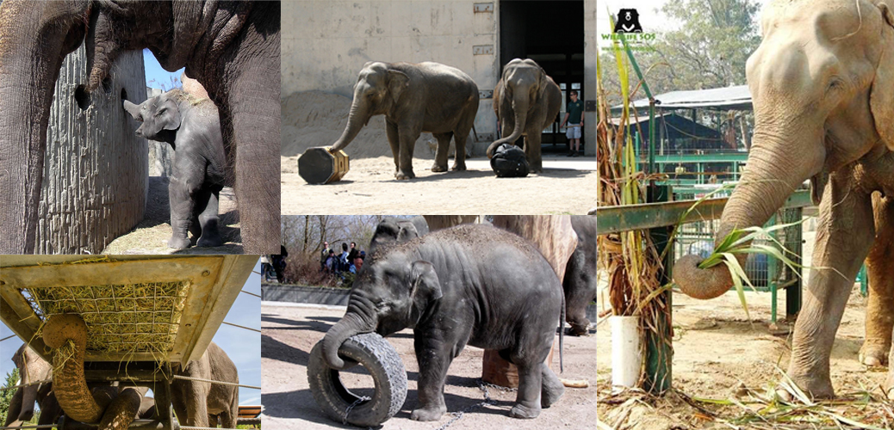
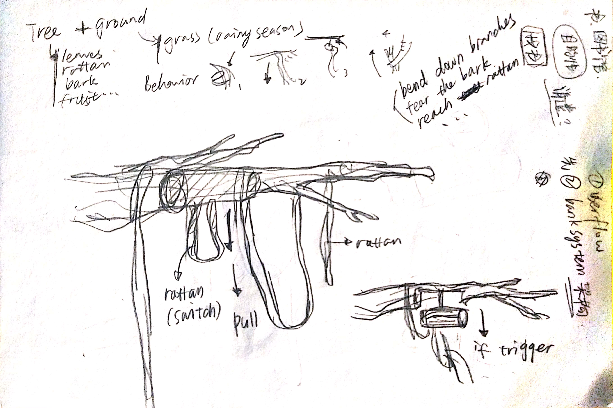
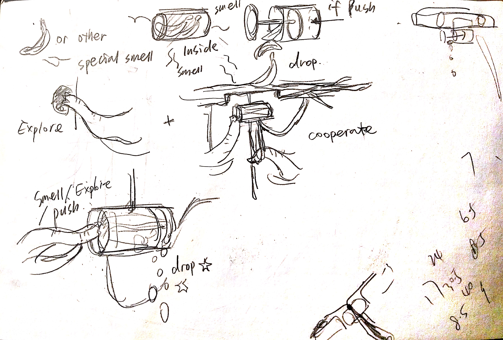
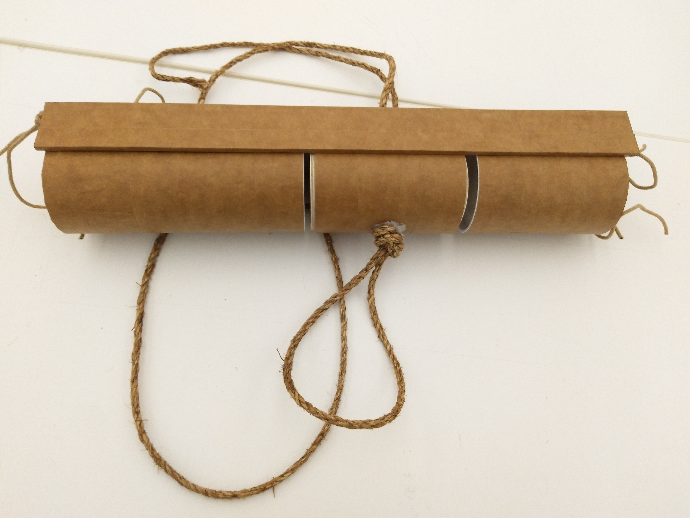
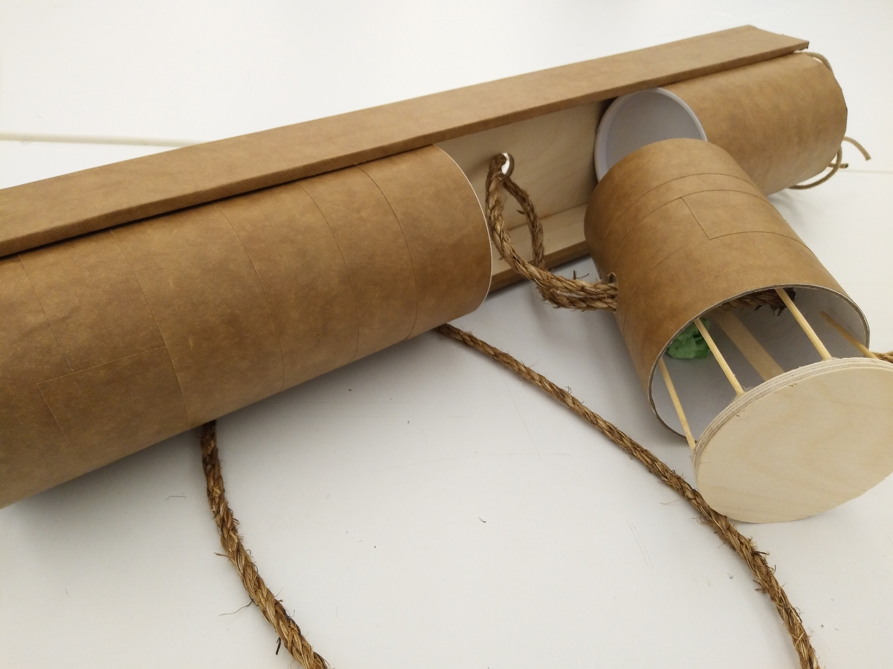
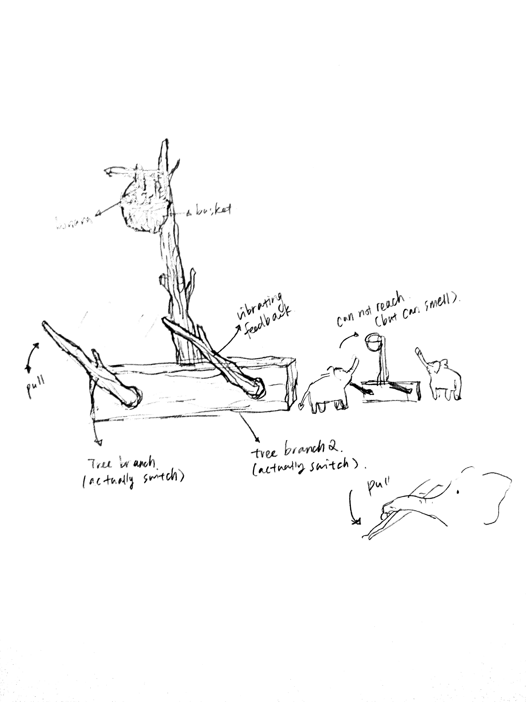

project 4
Prototype I






Updated proposal
Though elephants are “emotional” and pay attention to family members, some research shows that the orphan elephant who missed important social eduction from parents would be hard to fit in a elephant group. (I will attach research resources later, they are all in my folder or browser I just need a while to arrange them :c ) However the poaching and HEC(human elephant conflict) may lead to the consequence that the parent elephants been killed. Plotnik et al. (2011) demon- strated that “elephants can learn to coordinate with a partner in a task requiring two individuals to simultaneously pull two ends of the same rope to obtain a reward.”. If it possible to create some daily basis activity have the orphan baby elephant work with elephants group or other orphan elephant to obtain food and try to establish the connection? (I am not sure if trying to obtain food could enhance the relationship but it might be a general direction. I am sure my plan now might not the best way to encourage them cooperate with each other. If the whole idea about let them fit the group will help, I may need more time to figure out the best design of letting them cooperate.) Also not sure about: how to let them understand, how to create the context of cooperation, how can I combine elephants’ instinct playful behavior with my design and so on.
Here is my design. There are two branch-like switch, and a basket of banana is hanging on a higher shelf. Only when the two brach have been pulled at same time, the basket will decline (by machine or pulley) and the two elephants can have the food. One elephant can not reach the basket or reach the two switch at same time. There would be some vibrating feedback on the switch to let the elephants know they triggered something. (Fiona French et al. (2018)’s research mentioned the vibrating feedback is useful when they design the interface for elephants)

Elephants always interested me for their intelligence and their “emotional”. I was really impressed by the fact I heard that when a baby Elephant complain, the entire family will go over to touch and caress it to soothe it. However, as I known, the higher intelligence a specie have, the easier they may feel negative (like bored) when they are living in a zoo. Though many zoo pay a lot attention on animals welfare and try to create a nature environment for them, there are still many thing we can improve. Also it is fun and challenging to design some non-hands interaction. As a result, I choose elephants as my target user. and I as I know elephants are able to use (or even create) tools to reach some goals such as repelling insects, obtaining foods, scratching and so on. So my basic idea of enrichment facilities is to let them use their intelligence to interact with facilities and make them feel less bored or stressed.
Plan A
I food+entertain
It is a feeding set that require the elephant use different ways to open it and obtain the food. They can use their trunk to pull the handle like thing (mimic of tree branch) or pull the rope (mimic of rattan) or use another stick to hit the higher hanging feeding machine. This feeding set enable them to try to use their intelligence and some tools to have food (or treat?) It could also be a way to play.
Plan B
II “Tool kits” - still try to make this one more make sense
It is a tree branch liked tool kits with many different shape “tools” attached to it. They are designed to be access easily by elephants’ trunks. They are been able to use them to play or do other things.
Expert: DR. JOYCE POOLE